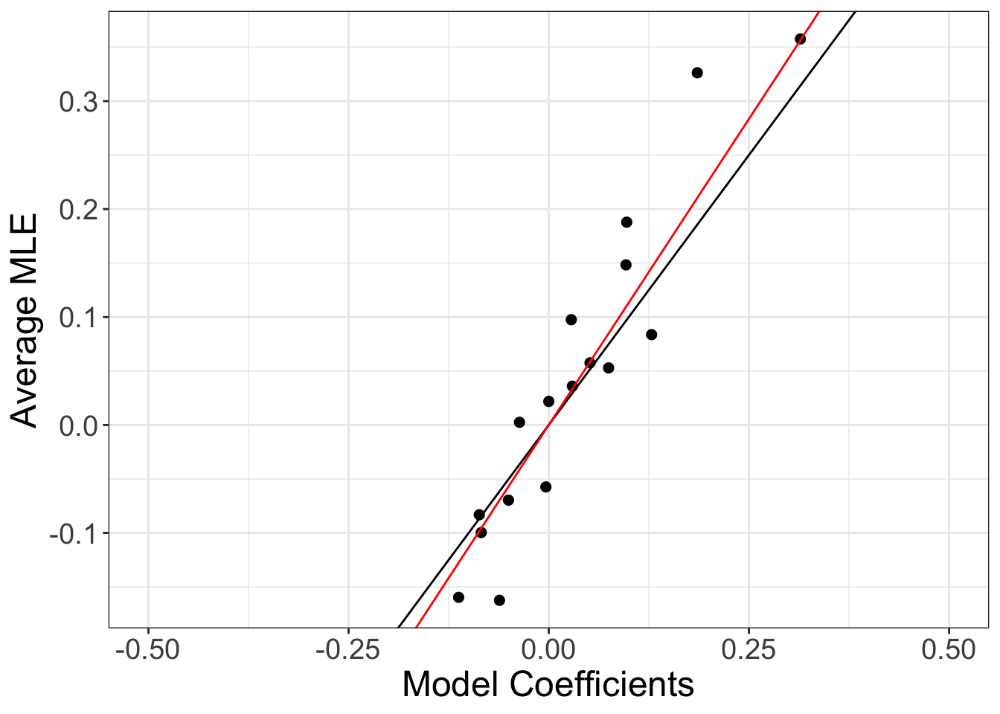
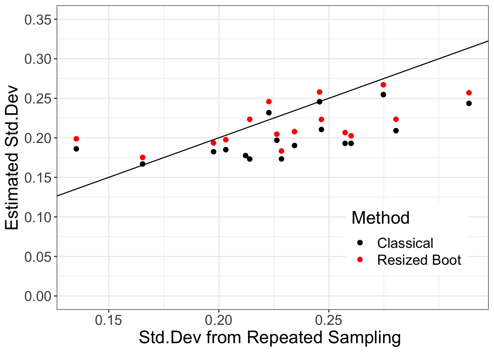

Real data example
In Section 5 we apply the resized bootstrap procedure to a real data. Researchers want to understand which factors are associated with restrictive spirometry pattern (RSP). They are particularly interested in the relationship between kidney function and RSP, and they hypothesize that glomerular hyperfiltration (GHF) may be associated with RSP risk.
They collected data from participants in Korea National Health and Nutrition Examination Survey (KNHANES) from 2009-2015. The outcome variable in this study is RSP (defined as FVC \(<\) 80% in predicted value AND FEV1/FVC \(\geq\) 0.7 1) and the covariates include demographic variables, medical history, medications used, and a variety of health-related variables.
dataloc <- "/Users/zq/Desktop/Topics/glm_boot/paper/code/Arxiv/Data/"
rsp <- read_excel(paste0(dataloc, "/rsp.xlsx"), na = ".")
pos <- rsp$HE_FVCp < 80 & rsp$HE_FEV1FVC > 0.7 # positive obsFitting logistic regression on full data
Since I will fit a logistic regression using a smaller sample size later (sample size \(n=200\)), I remove the variables that have smaller than 5% occurance in the positive or negative class (therefore I remove Proteinuria, Previous cardiovascular disease, Pulmondary TB, Atopic dermatitis, Bronchial asthma, Glomerular hyperfiltration).
I also standardize the variables before running GLM.
var <- c("SMK_CRNT", "DNK_HIGH", "EDU_HIGH", "INCM_HIGH","STRESS_HIGH",
"A_AGE", "A_SEX", "HE_SBP", "HE_DBP", "LAB_GLU_SI",
"TB_DX", "LAB_TG_SI", "LAB_HDL_SI", "HE_WC", "LAB_WBC",
"LAB_HB", "AR_DX")
data_full <- data.frame(rsp[,var],pos = pos) %>% drop_na()
pos_index <- which(data_full$pos)data_full_standardized <- data_full
data_full_standardized[,!names(data_full_standardized) == "pos"] <- scale(data_full_standardized[,!names(data_full_standardized) == "pos"])fit_full <- glm(pos~., data=data_full_standardized, family = binomial)Fitting logistic regression on one smaller sample
I now fit the logistic regression on a smaller sample of size \(n=200\). first select \(N=4800\) observations (which includes all of the positive cases), then I create 24 subsets of size \(n=200\). I fit an MLE in one sub-sample and compare the confidence interval using classical theory and the resized bootstrap.
set.seed(50)
N <- 4800
n <- 200
nsubsample <- 24
subset <- c(pos_index,sample((1:nrow(data_full))[-pos_index] , N-length(pos_index), replace = F))
ind <- matrix(sample(1:N, N, replace = F), nrow = nsubsample, ncol = n)data_small <- data_full[subset[ind[1, ]],]
data_small[,!names(data_small) == "pos"] <- scale(data_small[,!names(data_small) == "pos"])
data_small <- cbind(1, data_small )
fit_small <- glm(pos ~ . + 0 , data = data_small, family = binomial, x=T, y = T) # fit MLE
boot_small <- boot_fit_master(fit_small, B = 1000) # resized bootstrap# function to compute the lower and upper CI
compute_boot_ci <- function(bootfit, level){
q_up <- (1 + level)/2
q_low <- (1 - level) / 2
bootsample_adj <- (bootfit$boot_sample - bootfit$alpha * bootfit$beta_s)/bootfit$sd_boot
lower <- (bootfit$mle - apply(bootsample_adj, 1, function(t) quantile(t, q_up)) * bootfit$sd_boot) / bootfit$alpha
upper <- (bootfit$mle - apply(bootsample_adj, 1, function(t) quantile(t, q_low)) * bootfit$sd_boot) / bootfit$alpha
list(lower = lower, upper = upper)
}The bootstrap method brings the CI closer to the large sample estimates
alpha <- 0.95
lower_classical <- fit_small$coef - qnorm(0.5 + alpha/2) * summary(fit_small)$coef[, 2]
upper_classical <- fit_small$coef + qnorm(0.5 + alpha/2) * summary(fit_small)$coef[, 2]
boot_ci <- compute_boot_ci(boot_small, alpha)
Fit logistic MLE on all of the subsets
We repeat the process for each individual subset in order to study the bias, variance of the MLE.
Computing MLE in each subset
We now compute the MLE, as well as the resized bootstrap, for each sub-sample of size \(n = 200\).
p <- ncol(data_full) - 1
mle_s <- matrix(0, p + 1, nsubsample)
sd_mle <- matrix(0, p + 1, nsubsample)
sep <- NULL # store subset index where the logistic regression reports an error
B <- 1000 # number of bootstrap repetitions
alpha_boot <- numeric(nsubsample)
sd_boot <- matrix(0, nsubsample, p + 1)
bootsample <- list()
fit_boot_store <- list()
error <- NULL # store error of resized bootstrap
for(i in 1:nsubsample){
data_small <- data_full[subset[ind[i, ]],]
data_small[,!names(data_full_standardized) == "pos"] <- scale(data_small[,!names(data_full_standardized) == "pos"])
data_small <- cbind(1, data_small)
fit <- tryCatch(error= function(e) {cat(i, "E!\t"); return(-1)}, glm(pos ~ . + 0 , data = data_small, family = binomial, x=T, y = T))
if(length(fit) == 1 ){sep <- c(sep, i); error <- c(error,i); next; }else{
mle_s[,i] <- fit$coef
sd_mle[,i] <- summary(fit)$coef[,2]
}
fit_boot <- tryCatch(error= function(e) {cat(i, "E!\t"); return(-1)}, boot_fit_master(fit, B))
if(length(fit_boot) == 1) {error <- c(error, i); next;}
fit_boot_store[[i]] <- fit_boot
sd_boot[i, ] <- apply(fit_boot$boot_sample, 1, sd)
mean_ap <- apply(fit_boot$boot_sample, 1, mean)
alpha_boot[i] <- lm(mean_ap ~ fit_boot$beta_s + 0, weights = 1/sd_boot[i, ]^2)$coef
bootsample[[i]] <- fit_boot$boot_sample
}No signal! if(length(sep) >= 1){
mle_s <- mle_s[,-sep]
sd_mle <- sd_mle[,-sep]
}
if(length(error) >= 1){
alpha_boot <- alpha_boot[-error]
sd_boot <- sd_boot[-error, ]
}The number of times the MLE does not exist is 0 and the number of times the resized bootstrap fails is 1.
Bias of the MLE
We plot the average MLE (in sub-samples) versus the MLE using the full data (the full data contains 21880 observations). The MLE in the small subset slightly over-estimates the large sample coefficient which we would get if we fit a logistic regression using the full data. The resized bootstrap method estimates a bias of 1.1337506 (averaged over all the repetitions).

Std.dev of the MLE
Next, we plot the standard deviation of the MLE, showing the estimates using classical theory (results from the glm function), using resized bootstrap, as well as the empirical std.dev from repeated sampling (here, we take 24 sub-samples in total)

Coverage proportion
Finally, we compute the coverage property of the resized bootstrap method.
We report 1. the proportion of variables covered by the CI in a single-shot experiment and 2. the proportion of times the variable systolic blood pressure is covered.
| Mean - Classical | SD - Classical | Mean - Resized Boot | SD - Resized Boot | |
|---|---|---|---|---|
| 95% | 87.50 | 6.90 | 91.30 | 6.01 |
| 90% | 87.50 | 6.90 | 86.96 | 7.18 |
| 80% | 83.33 | 7.77 | 82.61 | 8.08 |
| Mean - Classical | SD - Classical | Mean - Resized Boot | SD - Resized Boot | |
|---|---|---|---|---|
| 95% | 92.16 | 1.26 | 94.88 | 1.19 |
| 90% | 85.78 | 1.58 | 88.24 | 1.43 |
| 80% | 72.30 | 1.89 | 74.68 | 1.71 |
Footnotes
FVC is forced vital capacity and FEV1 is forced expiratory volume in one second↩︎